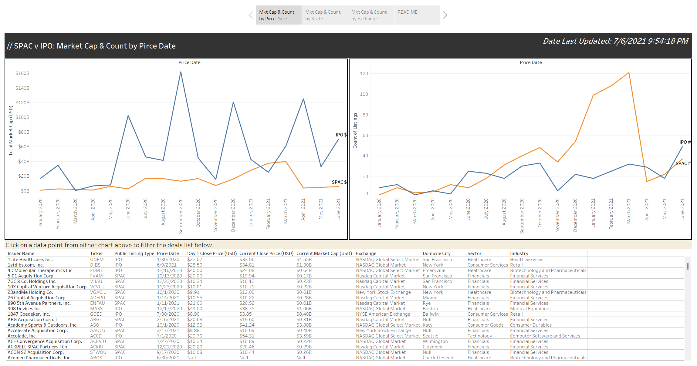

SPAC v IPO Comparison 1Q20-2Q21
SPACs experienced a dramatic increase in popularity throughout 2020 peaking in March of 2021. This can largely be attributed to the lower monetary and time commitment required compared to the traditional IPO process coupled with a surge in retail investor interest.
Regarding the construction of the report itself, I sourced the data from IHS Markit's Equity Deals Database. I selected a variety of quantitative and qualitative variables to build a wholistic set of views. I tend to modify default variable names on the dashboard for reader comprehension and naming consistency. When possible, I will use interactive charts rather than drop down filters to make my reports intuitive and to reduce visual clutter. Additionally, I like to include a list view of the source data at the bottom of my reports so that users can link directly to noteworthy records.
View the full report available on my Tableau Public repository here.